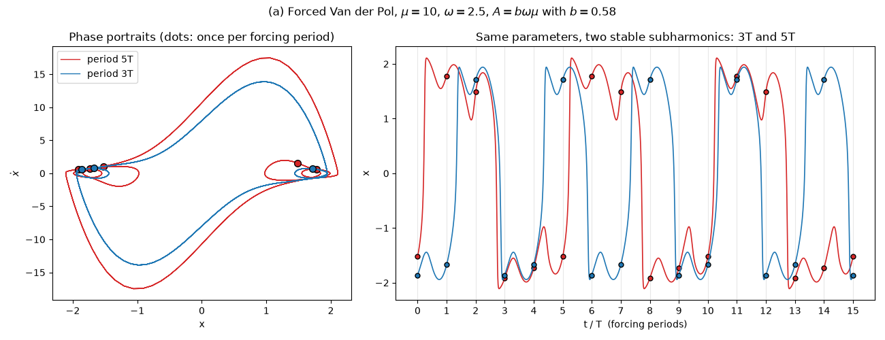
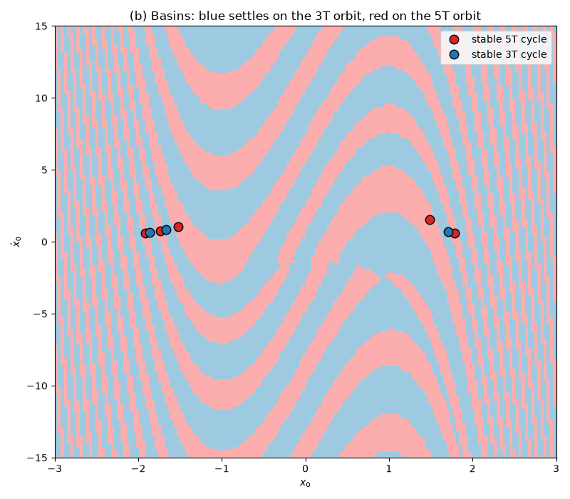
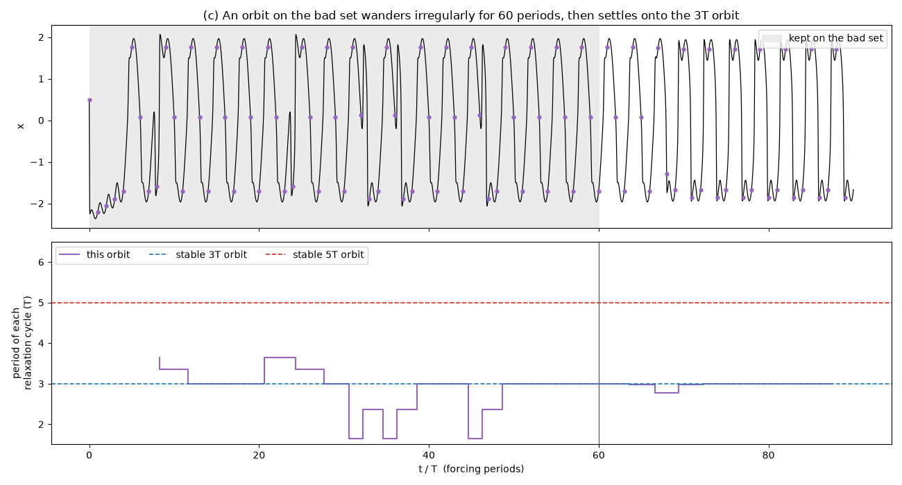

Note
Go to the end to download the full example code.
Cartwright–Littlewood: Chaos in the Forced Van der Pol Oscillator#
In 1945 Mary Cartwright and J. E. Littlewood studied the valve oscillator equation of radar engineering, driven by a periodic signal,
in the relaxation limit of large \(\mu\) (their \(k\); their \(\lambda\) is \(\omega\)). They proved that for a range of \(b\) it has two stable periodic motions with different periods at the same parameter values – subharmonics whose periods are different odd multiples of the forcing period \(T = 2\pi/\omega\) – together with a “bad” invariant set containing infinitely many periodic and uncountably many non-periodic orbits: chaos, proved in an equation from physics 18 years before Lorenz.
This example uses physicskit.chaos.systems.continuous.ForcedVanDerPol
at \(\mu = 10\), \(\omega = 2.5\), \(b = 0.58\), where
subharmonics of period \(3T\) and \(5T\) coexist, and shows the
three pieces of their theorem in turn: (a) the two stable periodic motions,
(b) the map of which starting points end up on which, and (c) the bad set
sitting on the boundary between the two basins.
import matplotlib.pyplot as plt
import numpy as np
from matplotlib.colors import ListedColormap
from physicskit.chaos.systems.continuous import ForcedVanDerPol
mu, omega, b = 10.0, 2.5, 0.58
system = ForcedVanDerPol(mu=mu, A=b * omega * mu, omega=omega)
T = system.forcing_period
steps = 300 # RK4 steps per forcing period (basins are converged at this step)
def settled_period(samples, max_period=12, atol=1e-3):
"""Smallest p with x_{n+p} = x_n over the stroboscopic samples, else 0."""
for p in range(1, max_period + 1):
if np.allclose(samples[p:], samples[:-p], atol=atol):
return p
return 0
(a) Two stable periodic motions of different periods#
Sampling the state once per forcing period (a stroboscopic map, via
stroboscopic_map())
turns a periodic motion of period \(nT\) into an \(n\)-cycle of
points. Two starting points only \(0.1\) apart in velocity settle,
after the transient, onto different attractors: one relaxation cycle every
\(3T\), or one every \(5T\).
starts = np.array([[0.5, -14.3], [0.5, -14.2]])
strobe = system.stroboscopic_map(starts, n_periods=150, steps_per_period=steps)
periods = [settled_period(s[-36:, 0]) for s in strobe]
print("settled periods (in units of T):", periods)
colors = {3: "tab:blue", 5: "tab:red"}
cycles = {}
fig, (ax_phase, ax_time) = plt.subplots(1, 2, figsize=(13, 5), gridspec_kw={"width_ratios": [1, 1.6]})
for s, p in zip(strobe, periods, strict=True):
t, states = system.trajectory(state0=s[-1], dt=T / steps, n_steps=15 * steps)
cycles[p] = s[-p:]
ax_phase.plot(states[:, 0], states[:, 1], color=colors[p], lw=1.0, label=f"period {p}T")
ax_phase.plot(s[-p:, 0], s[-p:, 1], "o", color=colors[p], ms=7, mec="k")
ax_time.plot(t / T, states[:, 0], color=colors[p], lw=1.2, label=f"period {p}T")
ax_time.plot(np.arange(16), states[::steps, 0], "o", color=colors[p], ms=5, mec="k")
ax_phase.set_xlabel("x")
ax_phase.set_ylabel(r"$\dot{x}$")
ax_phase.set_title("Phase portraits (dots: once per forcing period)")
ax_phase.legend(loc="upper left")
ax_time.set_xlabel("t / T (forcing periods)")
ax_time.set_ylabel("x")
ax_time.set_title("Same parameters, two stable subharmonics: 3T and 5T")
ax_time.set_xticks(np.arange(0, 16))
ax_time.grid(axis="x", alpha=0.3)
fig.suptitle(rf"(a) Forced Van der Pol, $\mu={mu:g}$, $\omega={omega:g}$, $A=b\omega\mu$ with $b={b:g}$")
fig.tight_layout()
plt.show()

settled periods (in units of T): [5, 3]
(b) Which starting point ends up on which orbit?#
Integrating a grid of starting points \((x_0, \dot{x}_0)\) at \(t = 0\) and colouring each by the period it settles onto maps the two basins of attraction. They interleave in ever-thinner bands. The boundary between them is where Cartwright and Littlewood’s bad set lives: a point exactly on it belongs to neither basin.
n_grid = 160
xs = np.linspace(-3.0, 3.0, n_grid)
vs = np.linspace(-1.5 * mu, 1.5 * mu, n_grid)
X, V = np.meshgrid(xs, vs)
grid = system.stroboscopic_map(np.column_stack([X.ravel(), V.ravel()]), n_periods=100, steps_per_period=steps)
labels = np.array([settled_period(s[-36:, 0]) for s in grid]).reshape(n_grid, n_grid)
print("grid points settling on each period:", {int(p): int(n) for p, n in zip(*np.unique(labels, return_counts=True), strict=True)})
fig2, ax2 = plt.subplots(figsize=(8, 7))
ax2.imshow(
np.where(labels == 3, 0, 1),
origin="lower",
extent=(xs[0], xs[-1], vs[0], vs[-1]),
aspect="auto",
cmap=ListedColormap(["#9ecae1", "#fcaeae"]),
interpolation="nearest",
)
for p, pts in cycles.items():
ax2.plot(pts[:, 0], pts[:, 1], "o", color=colors[p], ms=9, mec="k", label=f"stable {p}T cycle")
ax2.set_xlabel(r"$x_0$")
ax2.set_ylabel(r"$\dot{x}_0$")
ax2.set_title("(b) Basins: blue settles on the 3T orbit, red on the 5T orbit")
ax2.legend(loc="upper right")
fig2.tight_layout()
plt.show()

grid points settling on each period: {3: 14343, 5: 11257}
(c) The bad set: an orbit that wanders irregularly, then settles#
The bad set is repelling: nearby orbits leave it at a rate of roughly \(e^{2.8}\) per forcing period, so a single double-precision trajectory aimed at the boundary stays near it for only about a dozen periods. The straddle method (Nusse and Yorke, 1989) keeps it there for as long as we like. We keep a pair of points on opposite sides of the boundary, advance both by one period, and bisect between them again whenever they drift apart. Their midpoint then follows an orbit on the bad set. After 60 forcing periods we stop correcting it and let it go.
def fates(points):
s = system.stroboscopic_map(points, n_periods=100, steps_per_period=steps)
return np.array([settled_period(q[-36:, 0]) for q in s])
def refine(a, c, fate_a, tol=1e-9):
"""Shrink the straddling pair (a, c) to within tol, keeping fates apart."""
scale = np.array([1.0, 1.0 / mu])
while np.linalg.norm((c - a) * scale) > tol:
pts = a + np.linspace(0.0, 1.0, 11)[1:-1, None] * (c - a)
other = np.flatnonzero(fates(pts) != fate_a)
if other.size == 0:
a = pts[-1]
continue
j = other[0]
a, c = (pts[j - 1] if j > 0 else a), pts[j]
return a, c
a, c = starts[0].copy(), starts[1].copy()
fate_a = periods[0]
n_track, n_free = 60, 30
tracked = []
for _ in range(n_track):
a, c = refine(a, c, fate_a)
tracked.append(0.5 * (a + c))
a, c = system.stroboscopic_map(np.array([a, c]), n_periods=1, steps_per_period=steps)[:, -1]
released = system.stroboscopic_map(tracked[-1], n_periods=n_free, steps_per_period=steps)[0, 1:]
samples = np.vstack([tracked, released])
# Continuous x(t): each tracked point is integrated for one period (the
# pieces join to within 1e-9), then the released orbit runs on freely.
pieces = [system.trajectory(state0=p, dt=T / steps, n_steps=steps)[1][:-1] for p in tracked]
pieces.append(system.trajectory(state0=tracked[-1], dt=T / steps, n_steps=(n_free + 1) * steps)[1][steps:])
x_path = np.concatenate(pieces)[:, 0]
t_path = np.arange(x_path.size) * (T / steps) / T
def cycle_lengths(x, t, level=1.0):
"""Time between successive upward relaxation jumps, in forcing periods.
A jump is an upward crossing of x = +1: the lower-branch wiggles and the
aborted jumps of the bad set, which hover near x = 0, never reach it.
"""
up = np.flatnonzero((x[:-1] < level) & (x[1:] >= level))
t_up = t[up] + (level - x[up]) * (t[up + 1] - t[up]) / (x[up + 1] - x[up])
return t_up[1:], np.diff(t_up)
t_cyc, lengths = cycle_lengths(x_path, t_path)
final_period = settled_period(released[-15:, 0])
print(f"bad-set cycle lengths (in T): {np.round(lengths[t_cyc < n_track], 2).tolist()}")
print(f"released orbit settles on period {final_period}T")
fig3, (ax_x, ax_len) = plt.subplots(2, 1, figsize=(13, 7), sharex=True)
ax_x.axvspan(0, n_track, color="0.92", zorder=0, label="kept on the bad set")
ax_x.plot(t_path, x_path, color="k", lw=0.9)
ax_x.plot(np.arange(samples.shape[0]), samples[:, 0], "o", color="tab:purple", ms=3.5)
ax_x.set_ylabel("x")
ax_x.set_title(f"(c) An orbit on the bad set wanders irregularly for {n_track} periods, then settles onto the {final_period}T orbit")
ax_x.legend(loc="upper right")
ax_len.step(t_cyc, lengths, where="pre", color="tab:purple", lw=1.5, label="this orbit")
for p in (3, 5):
ax_len.axhline(p, color=colors[p], ls="--", lw=1.2, label=f"stable {p}T orbit")
ax_len.axvline(n_track, color="0.4", lw=1.0)
ax_len.set_xlabel("t / T (forcing periods)")
ax_len.set_ylabel("period of each\nrelaxation cycle (T)")
ax_len.set_ylim(1.5, 6.5)
ax_len.legend(loc="upper left", ncol=3)
fig3.tight_layout()
plt.show()

bad-set cycle lengths (in T): [3.64, 3.36, 3.0, 3.0, 3.0, 3.64, 3.36, 3.0, 1.64, 2.36, 1.64, 2.36, 3.0, 3.0, 1.64, 2.36, 3.0, 3.0, 3.0]
released orbit settles on period 3T
The stable orbits repeat one fixed cycle length, 3 or 5 forcing periods. The bad-set orbit keeps hovering near the unstable middle branch \(x \approx 0\) (the purple samples there), sometimes falling back and sometimes jumping late. So its cycles have irregular, non-integer lengths in a non-repeating order. Cartwright and Littlewood proved that the bad set holds infinitely many periodic and uncountably many non-periodic orbits. Levinson’s 1949 piecewise-linear model showed the same structure more explicitly, and it was that example that led Smale to the horseshoe.
Total running time of the script: (0 minutes 4.961 seconds)